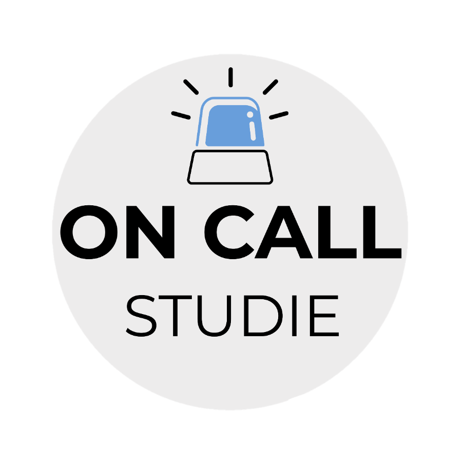
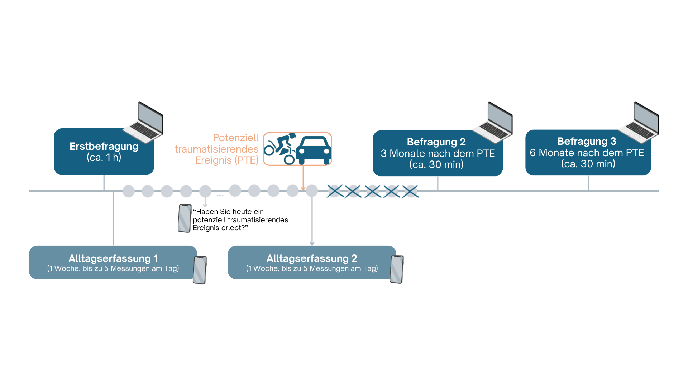
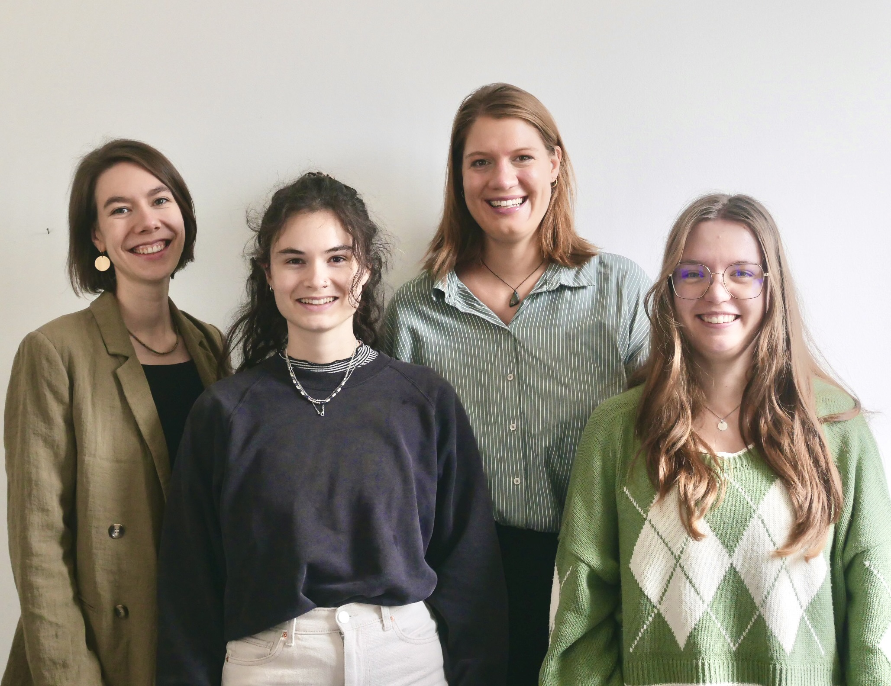

Wir sind ein Forschungsteam an der Universität des Saarlandes und führen eine wissenschaftliche Studie zum Umgang mit belastenden und potenziell traumatischen Ereignissen im beruflichen Alltag durch. Für dieses Forschungsprojekt suchen wir Personen, die in sogenannten Hochrisikoberufen arbeiten, also Berufen, in denen man regelmäßig mit besonders belastenden Situationen konfrontiert wird – zum Beispiel bei der Polizei, Feuerwehr oder im Rettungsdienst.
In dieser Studie wollen wir untersuchen, wie Menschen in beruflichen Tätigkeiten mit erhöhten Belastungen mit emotional herausfordernden oder potenziell traumatischen Arbeitssituationen umgehen. Ziel der Studie ist es, besser zu verstehen, wie Menschen solche Erfahrungen bewältigen und wie sich diese Prozesse auf das psychische Wohlbefinden auswirken. Dabei interessiert uns, welche Strategien Sie nutzen, um schwierige Situationen zu bewältigen, und welche Faktoren – wie Unterstützung oder zusätzliche Belastungen – dabei eine Rolle spielen. Die Studie wird in Deutschland durchgeführt. Die Datenerhebung erfolgt online über SoSciSurvey sowie über eine Smartphone-App (SEMA3) für wiederholte Kurzbefragungen im Alltag.
Mit Ihrer Teilnahme tragen Sie dazu bei, die psychologische Forschung praxisnah weiterzuentwickeln und langfristig bessere Unterstützungsangebote für stark belastete Berufsgruppen zu gestalten. Darüber hinaus leisten Sie mit der Teilnahme an der Studie einen Beitrag, die Sichtbarkeit dieses Themas zu erhöhen.

Nach drei Monaten und nach sechs Monaten erhalten Sie jeweils per E-Mail einen Link zu einer weiteren Online-Befragung, die inhaltlich an die Erstbefragung anknüpft.
Haben Sie Interesse, teilzunehmen? Schreiben Sie uns gern eine Email oder geben Sie Ihre E-Mail-Adresse direkt hier an, um eine Einladung zur Studie zu erhalten.
Die Erinnerung an traumatische oder belastende Erfahrungen im Rahmen der Untersuchung kann vorübergehend psychische Belastungen auslösen.
Wenn Sie sich akut belastet fühlen oder Unterstützung benötigen, können Sie folgende Angebote kontaktieren:
TelefonSeelsorge – Die kostenfreie Hotline ist rund um die Uhr erreichbar.
Telefon: 0800 111 0 111 und 0800 111 0 222
Weitere Informationen finden Sie unter: https://www.telefonseelsorge.de/
krisenchat – Digitale, psychosoziale Beratung vertraulich per Chat in Echtzeit, rund um die Uhr, ohne Wartezeit oder Registrierung.
Telefon: keine telefonische Beratung
Weitere Informationen finden Sie unter: https://krisenchat.de
Hilfetelefon „Gewalt gegen Frauen“ – Unterstützung per Telefon und Online-Beratung rund um die Uhr.
Telefon: 08000 116 016
Weitere Informationen finden Sie unter: https://www.hilfetelefon.de/
Akute Krisen / Notfall – Bitte wenden Sie sich an Ihren Arzt, Psychotherapeuten, die nächste psychiatrische Klinik oder den Notarzt.
Telefon: 112
Weitere Informationen finden Sie unter: –
Kontakt zur Studie – Bei Fragen oder Unterstützungsbedarf erreichen Sie die Forscher:innen der OnCall-Studie.
Telefon: –
Weitere Informationen finden Sie unter: oncallstudie@uni-saarland.de
Worum geht es?
In dieser Online-Studie untersuchen wir, wie Menschen in Hochrisikoberufen im Arbeitsalltag mit belastenden und stressigen Ereignissen umgehen und welche Bewältigungsstrategien sie in diesem Kontext nutzen.
Wen suchen wir?
Personen, die im beruflichen Alltag regelmäßig mit sehr belastenden Situationen umgehen müssen (z.B. im Rettungsdienst, der Feuerwehr, Polizei oder auch psychosozialen Notfallversorgung).
Was erwartet Sie?
Eine Studie über mehrere Wochen, in der nach dem Erleben eines kritischen Ereignisses für 7 Tage täglich 5 mal sehr kurz (2-3 Minuten) situationsbezogen nach Stress und Coping gefragt wird. Zusätzlich längere Fragebögen 1) zu Beginn, 2) nach 3 Monaten und 3) nach 6 Monaten.
Was bieten wir?
Einen spannenden Einblick in die Resultate (persönliche Profile, anhand derer eigenes Coping Verhalten sichtbar gemacht werden kann) & Monetäre Vergütung (genaue Infos dazu zu Projektbeginn)
Wann beginnt die Studie?
Im Frühjahr 2026.
Was ist, wenn ich die Studie vorzeitig abbrechen muss?
Die Teilnahme ist vollständig freiwillig und kann jederzeit ohne Angabe von Gründen beendet werden, ohne dass Ihnen darauf Nachteile entstehen. Sie erhalten eine anteilige Vergütung.
Wie kann ich an der Studie teilnehmen – Was ist der erste Schritt?
- Um an der Studie teilzunehmen, melden Sie sich über den angegebenen Link oder QR-Code an. Dieser führt zu einem kurzen Online-Formular (Google Forms), in dem Sie Ihre E-Mail-Adresse hinterlegen können.
- Sobald neue Informationen zur Studie vorliegen, zum Beispiel zum Start oder zur Nutzung der App, informieren wir Sie gezielt per E-Mail. Die Anmeldung ist unverbindlich und dient ausschließlich der Kontaktaufnahme.
-Wenn Sie sich zur Teilnahme entscheiden, beginnen Sie im Anschluss mit der ersten Onlinebefragung. Bitte nehmen Sie sich dafür ausreichend Zeit und vermeiden Sie Ablenkungen. Es gibt keine richtigen oder falschen Antworten – wichtig ist Ihre persönliche Einschätzung.
Die Studie startet - Wie funktioniert die Teilnahme?
Die Teilnahme erfolgt digital über eine Onlineplattform und über die App SEMA3, in der Sie Fragen einfach zugänglich beantworten können.
Sobald Sie ein besonders stressiges Erlebnis bei der Arbeit haben (also ein „kritisches Ereignis“ geschieht), erhalten Sie ab diesem Zeitpunkt regelmäßig Erinnerungen über die App. Die einzelnen Befragungen sind sehr kurz und dauern in der Regel nur wenige Minuten. Der Zeitpunkt für die Erinnerungsbenachrichtigung ist dabei vom Forschungsteam möglichst an Ihren persönlichen Arbeitsplan angepasst.
Warum gibt es so viele Erinnerungen an einem Tag?
Wir wissen, dass in Ihrem Berufsalltag oft wenig Zeit bleibt, um Fragen zu beantworten, dass Schichten lang sind und kaum Raum für Pausen besteht. Gerade deshalb ist es besonders wichtig, Ihre Erfahrungen möglichst zeitnah zu erfassen. Je mehr Zeit zwischen dem Erleben einer Situation und dem Beantworten der Fragen vergeht, desto schwieriger ist es, die Antworten auf die tatsächliche Situation zurückzuführen und mögliche Veränderungen in Ihrer Reaktion zu erkennen.
Um sowohl die wissenschaftliche Qualität zu sichern als auch den Ablauf Ihres Arbeitstags zu berücksichtigen, haben wir die Befragungen auf fünf Zeitpunkte pro Tag verteilt. So können wir Ihre Erfahrungen möglichst genau erfassen, ohne dass wichtige Reaktionen verloren gehen.
Was ist, wenn ein Signal für die Teilnahme vergessen oder verpasst wird?
Wenn Sie ein Signal verpassen, ist das nicht schlimm. Da wir wissen, dass es manchmal schwierig ist, in der vorgegebenen Zeit zu antworten, haben wir fünf Signale pro Tag festgelegt. Sie haben jeweils eine Stunde Zeit, den Kurzfragebogen noch zu beantworten. Es wäre gut, wenn Sie insgesamt auf eine Teilnahme von etwa 80%-90% kommen, damit wir mit den Ergebnissen gut arbeiten können.
Was ist die SEMA3-App?
Die App ermöglicht es, persönliche Erfahrungen unmittelbar im echten Leben zu erfassen. In dieser Studie nutzen wir die SEMA3-App, um die kritischen Ereignisse auf der Arbeit und den Umgang damit zeitnah zu begleiten und festzuhalten. Wir haben eine ausführliche Anleitung zusammengestellt, wie Sie die SEMA3-App bedienen können und auf unsere Fragebögen zugreifen können.
Es gibt aber auch einen User Guide und Video-Anleitungen auf der Website von SEMA3 selbst: https://sema3.com/manual.html.
Ich sehe den nächsten Studienteil nicht. Was kann ich tun?
...
Meine Frage wurde nicht in dem Q&A beantwortet - Was jetzt?
Schicken Sie gerne einfach eine E-Mail an das Forschungsteam und wir werden Ihnen schnellstmöglich antworten!
